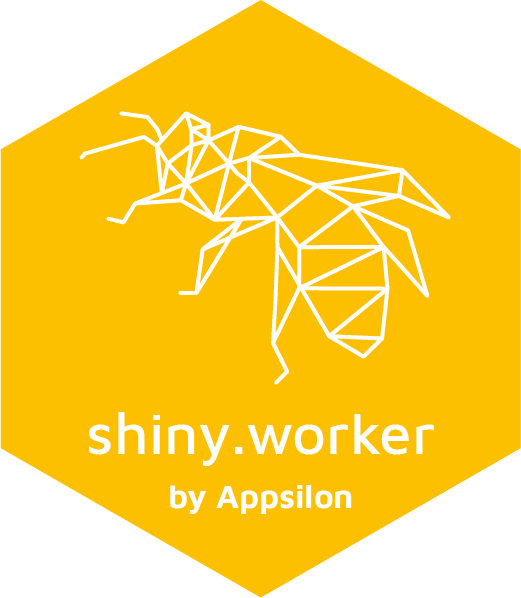

shiny.worker 
Intra-session reactivity in Shiny.
shiny.worker allows you to delegate heavy computation tasks to a separate process, such that it does not freeze your Shiny app.
How to install?
Pick the stable version from CRAN:
install.packages("shiny.worker")or the latest from GitHub:
remotes::install_github("Appsilon/shiny.worker")Example
See live example here or more examples with code in the examples/ folder.
How to use it?
Initialise your worker at the beggining of your app.
worker <- initialize_worker()Then, in the server of your Shiny app define a promise that returns a reactive when your heavy job will be completed.
my_heavy_calculations <- function(args) {
# ...
args
}
# this reactive object is used to trigger the job start,
# but also to pass parameters to the function
reactive_arguments <- reactive({
input$start
list(r = rnorm(1))
})
# resultPromise will be a reactive value with results returned by my_heavy_calculations
resultPromise <- worker$run_job("job1", my_heavy_calculations, args_reactive = reactive_arguments)
resultPromise()$result # contains the result of the calculations
resultPromise()$resolved # contains flag that informs whether the job has finished or notAppsilon

Appsilon is a Posit (formerly RStudio) Full Service Certified Partner.
Learn more at appsilon.com.
Get in touch opensource@appsilon.com
Explore the Rhinoverse - a family of R packages built around Rhino!